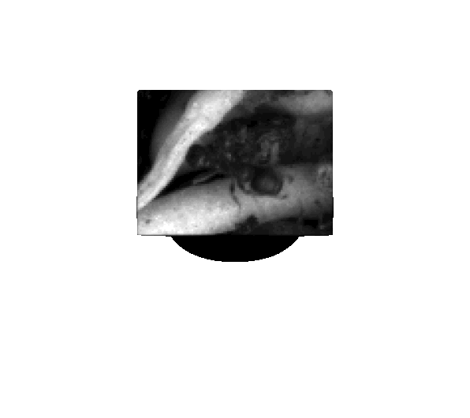

Ocular Drift transforms retinal image statistics and spatiotemporal RFs
Fully static, runs in your browser (PyScript). Use the controls, then press Update.
Controls
Input (1/f^α) and DoG-filtered
from app import render_inputs
render_inputs("#img_canvas", "#dog_canvas")
Radial Power Spectra (log–log)
from app import render_psd_inputs
render_psd_inputs("#psd_inputs_canvas")
Drift: Frame t, t+1 (shifted), and Temporal difference
from app import render_drift_frames
render_drift_frames("#t_canvas", "#t1_canvas", "#diff_canvas")
PSD: Input vs Temporal difference
from app import render_psd_drift
render_psd_drift("#psd_drift_canvas")
Actual drift segment (optional)
If you place your GIF at assets/actual_drift_segment_example.gif, it will show below.

from app import update_all
from js import document
document.getElementById("updateBtn").addEventListener("click", lambda evt: update_all())